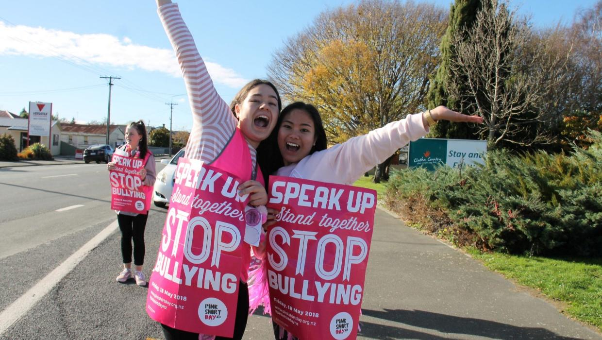

How can bullying affect a person's confidence and mental well being?
Bullying can have a serious effect on any person's confidence and can include their mental well being as well. Bullying may also make a person feel worthless, not secure with the public, lonely, and could be afraid to be themselves. This can begin doubt to their abilities, appearence, and value, by this its because of the hurtful words or actions of others. However, bullying can also cause high key stress, anxiety, sadness, and the Hardship to place trust in others. Through time, experiences like theses may affect friendships, schoolwork, and daily life. But this can all change with support from trusting people who provide these factors such as, self-care, and encouragement, a person can rebuild their confidence, which can let them recognise their worth and then beginning to heal.

What should you do if someone is bullying you
If you are being bullied by someone, remember that you don't need to be treated that way, and that its never your fault. Try to remain calm and, if it feels safe, have courage to tell them to stop. Avoid fighting back, as this can make the situation more worse. So tell someone you'll trust, such as for example a parent, teacher, or a school counsellor as they can provide help. If the bullying still happening but online, save the evidence by taking a screenshot, then block the person, and report their behaviour to the school. Most importantly, be able to surround yourself with supportive peers that can make you feel save and valued.

How can someone build their confidence after being bullied?
Anyone can rebuild their confidence after being bullied by have to remember that their worth isn't defined by other's words or actions. They can start by practising self-love at frist then, focusing on strengths such as, doing activities that make them feel happy not sad. Surrounding themselves with peers that uplift each other when they are down. It is also important to speak openly about how their feelings and in which give them time to heal.